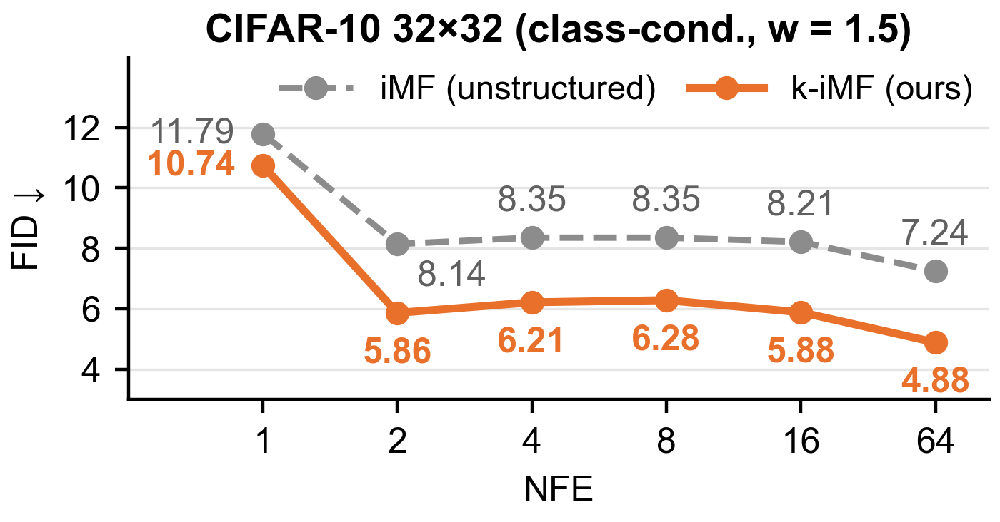
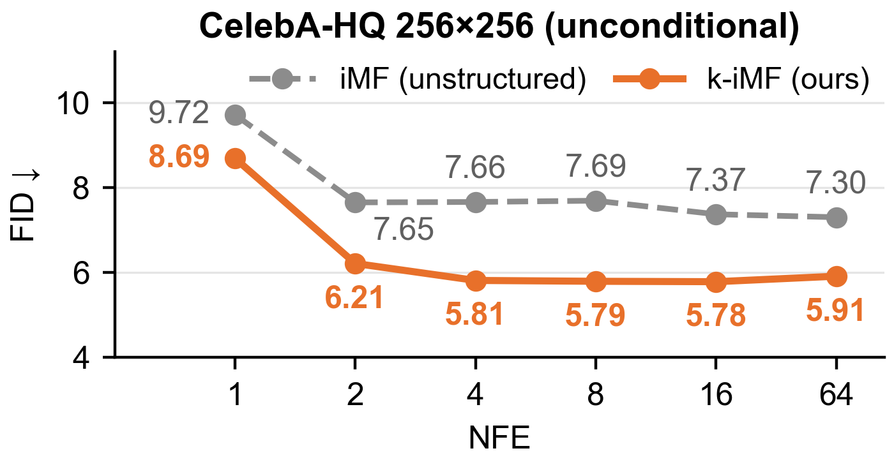
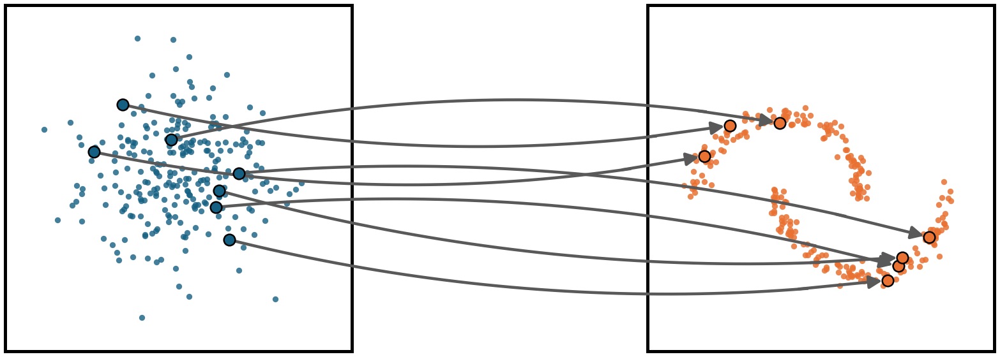
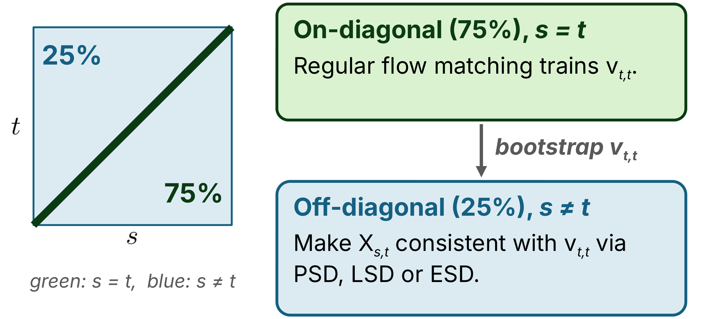
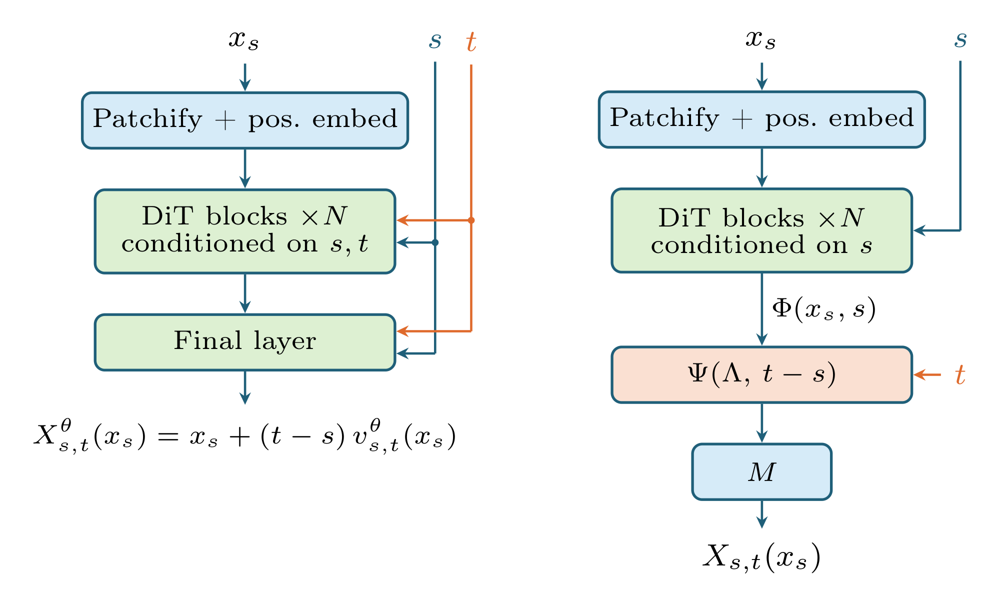

Q: Flow maps generate samples in one or a few steps, but they are trained as unstructured networks of two times. Does giving the flow map algebraic structure help, without costing expressivity?
- Gap: Every flow-map objective (Lagrangian, Eulerian, progressive, MeanFlow) is stated for an arbitrary two-time network, typically a DiT conditioned on both times. The flow map's defining semigroup property is enforced only through the loss, never by the architecture.
- Method: Koopman Flow Maps (KFMs) write the flow map as X_{s,t}(x) = x + M\,\Psi(\Lambda, t-s)\,\Phi(x,s): a backbone \Phi that sees only the departure time s, a learned spectrum \Lambda, and a closed-form diagonal kernel \Psi that carries the features to any arrival time t. The semigroup structure holds by construction. KFMs train from scratch, with no pretrained flow model.
- Theory: This is exactly the structure a finite-dimensional Koopman representation forces on a flow map, and it costs no expressivity on compact domains. Under it, the Lagrangian, Eulerian, progressive and mean-flow residuals are all projections of a single self-consistency defect.
- Results: With matched data, backbone, loss and training budget, k-iMF beats its unstructured iMF counterpart at every NFE from 1 to 64 on class-conditional CIFAR-10 and unconditional CelebA-HQ 256. At 2 NFE, k-iMF already has a lower FID than iMF at 64 NFE.
One-line summary: Writing the flow map in Koopman form, so that the arrival time enters only through a closed-form kernel, is a better inductive bias for few-step generation, and it unifies the self-distillation losses as views of one defect.


Primer on flow matching and flow maps
Primer on flow matching and flow maps
Flow matching
Let p_0 be a simple base distribution (a standard Gaussian) and q_1 the data distribution on \mathbb{R}^d. Flow matching[1][2][3] learns a time-varying velocity field whose flow carries p_0 to q_1. A sample is generated by drawing noise and integrating the ODE
The true marginal velocity u_t is not available, so the network regresses onto a tractable conditional velocity instead. With the straight-line path x_t = (1-t)\,x_0 + t\,x_1, the conditional velocity is simply x_1 - x_0, and the loss is
Its gradients match those of regressing onto the marginal field, so minimizing this simple loss gives the correct generative field. The cost comes at sampling time: integrating the ODE accurately takes many network evaluations (NFEs).

Flow maps
A flow map[4][5][6], also known as a consistency model[7], removes this cost. It learns the two-time map X_{s,t} that jumps directly between any two points on the same trajectory, X_{s,t}(x_s) = x_t, so a sample takes as little as one network call, x_1 = X_{0,1}(x_0). The usual parametrization writes the map through an average velocity,
so the diagonal v_{t,t} is an ordinary velocity field, trainable by flow matching. Given that, a map is the true flow map if and only if any one of three conditions holds[5]:
- Lagrangian (an ODE along trajectories): \partial_t X_{s,t}(x) = v_{t,t}\big(X_{s,t}(x)\big).
- Eulerian (a transport PDE): \partial_s X_{s,t}(x) + \partial_x X_{s,t}(x)\, v_{s,s}(x) = 0.
- Semigroup (two jumps equal one): X_{u,t}\big(X_{s,u}(x)\big) = X_{s,t}(x) for all s \le u \le t.
Self-distillation losses
Each condition becomes a squared residual, giving the three self-distillation losses of Boffi et al.[5]: LSD (Lagrangian), ESD (Eulerian) and PSD (progressive, from the semigroup condition). The map is trained with no teacher: a fixed fraction of each batch lies on the diagonal s = t and is trained by flow matching, and the rest lies off it and is trained by one of these losses, bootstrapping from the current diagonal. MeanFlow and improved MeanFlow (iMF)[6][8] are close relatives of ESD and are among the strongest one-step image generators.

Koopman Flow Maps
The missing piece: structure
How to train a flow map is by now well understood. What is missing is a structured architecture. Every self-distillation objective is stated for an arbitrary two-time network X^{\theta}_{s,t}, typically a Diffusion Transformer (DiT)[9] with both times fed in as conditioning. The semigroup property that defines a flow map is enforced only through the loss, and each new arrival time costs a full backbone pass. We ask:
Does imposing algebraic structure on X^{\theta}_{s,t} supply a useful inductive bias, without giving up the expressivity of an unstructured network?
Our answer is the Koopman Flow Map. The backbone sees only the departure time s, and the arrival time t enters only through a closed-form kernel \Psi(\Lambda, t-s) built from a learned diagonal spectrum \Lambda. Because \Psi(\Lambda,\tau_1)\,\Psi(\Lambda,\tau_2) composes like a semigroup, the structure is there by construction rather than by penalty.

Koopman operators for time-varying systems
The Koopman operator[10][11] describes a nonlinear dynamical system through a linear operator acting on observables, functions of the state. To handle the time-varying field u_t, we treat time as a state and work with the autonomous system on (x,s),
whose flow over a duration \tau is (x,s) \mapsto (X_{s,s+\tau}(x),\, s+\tau). The extended Koopman operators act on an observable f by composition with this flow, and their generator is the derivative along the time-extended field:
The operators form a linear semigroup, K^{\tau}_{\mathrm{ext}} K^{\sigma}_{\mathrm{ext}} = K^{\tau+\sigma}_{\mathrm{ext}}, inherited from the semigroup property of the flow map. Their eigenfunctions are what make them useful: an eigenpair \mathcal{L}_{\mathrm{ext}}\phi = \lambda\phi evolves along trajectories as K^{\tau}_{\mathrm{ext}}\phi = e^{\lambda\tau}\phi.
Why eigenfunctions matter.Suppose a quantity of interest y(x), such as an energy or a momentum, lies in the span of two eigenfunctions, y(x) = c_1\phi_1(x,s) + c_2\phi_2(x,s). Then its whole future is known from the eigenfunctions at the initial time alone: y(x(t)) = c_1 e^{\lambda_1(t-s)}\phi_1(x(s),s) + c_2 e^{\lambda_2(t-s)}\phi_2(x(s),s). No integration is needed.
Finite-dimensional representations
K^{\tau}_{\mathrm{ext}} is linear but infinite-dimensional. In practice one needs a finite-dimensional representation that is both expressive, containing the state x itself, and accurate, capturing the flow. Finding one is the central problem of Koopman learning, approached with fixed dictionaries[12][14] or learned ones[13]. The key claim of this section is:
Learning a finite-dimensional Koopman representation is just as expressive as learning a flow map.
Two results support it. The first identifies the right structure:
Definition (time–state separability).A flow map is time–state separable (TSS) of rank r if there are A:\mathbb{R}\to\mathbb{C}^{d\times r} and B:\mathbb{R}^d\times\mathbb{R}\to\mathbb{C}^{r} with X_{s,t}(x) = A(t-s)\,B(x,s) for all (s,t,x).
Theorem 1 (informal).If the flow map is TSS of rank r, it has an exact Koopman representation of dimension at most r that contains the state. Conversely, every exact finite-dimensional Koopman representation containing the state is TSS. Finding a TSS flow map is therefore equivalent to finding a finite-dimensional Koopman representation.
The second says that imposing this structure costs nothing on a compact domain:
Theorem 2 (informal).Let \mathcal{X}\subset\mathbb{R}^d be compact and X_{s,t} continuous on [0,1]^2\times\mathcal{X}. For every \varepsilon > 0 there is a TSS flow map of finite rank, with continuous A and B, such that
Thm 2→
Thm 1↔
basis→
The Koopman flow-map parametrization
Theorem 1 says which flow maps admit a finite-dimensional Koopman representation, but leaves A and B unstructured. Using one more piece of structure, a basis of eigenfunctions, gives a much more specific form. Suppose the representation is spanned by m eigenfunctions \Phi = (\phi_1,\dots,\phi_m)^{\top} of \mathcal{L}_{\mathrm{ext}} with eigenvalues \Lambda = \mathrm{diag}(\lambda_1,\dots,\lambda_m). Since it contains the state, there is a readout x = C\,\Phi(x,s), and applying the generator to both sides gives the velocity as a combination of the same eigenfunctions, the Koopman mode decomposition:
Along a trajectory each eigenfunction evolves as e^{\lambda_k\sigma}, so integrating from s to t turns the flow map into a closed-form expression in the features at the departure time only. This is the KFM:
with the diagonal, closed-form time kernel
Reading the parametrization
- Backbone \Phi(x,s): a neural network that sees the state and the departure time, and nothing else.
- Spectrum \Lambda: m learned eigenvalues.
- Kernel \Psi(\Lambda,\tau): the only place the arrival time enters, as m scalar functions of the gap \tau. Evaluating the map at a new arrival time costs a diagonal rescaling, not a second network pass.
- Modes M: a linear readout from the m features back to the state.
The KFM is TSS of rank d+m, with the state carried by an explicit identity block. In average-velocity form,
so the diagonal velocity is exactly the mode decomposition, v^{\mathrm{KFM}}_{s,s}(x) = M\,\Phi(x,s), and is trained by flow matching as usual. In practice the eigenpairs are unknown, so (M,\Lambda,\Phi) is a trainable triple. Eigenvalues of a real system come in conjugate pairs, which lets the whole parametrization run in real arithmetic.
Self-consistency of a candidate triple
The derivation above runs in the usual Koopman direction: fix the dynamics, take eigenpairs, read off the flow map. Training runs it backwards. A trainable triple (M,\Lambda,\Phi) is not, a priori, the Koopman representation of anything. Instead it defines a dynamics and a two-time map:
The map is the flow of the dynamics only if (\lambda_k,\phi_k) really are eigenpairs. Two defects measure the failure, one infinitesimal and one at finite time:
r is the eigenfunction equation for the induced generator. \eta compares the evolution e^{\Lambda\tau}\Phi that eigenfunctions would have with the value \Phi actually takes at the landed point.
Proposition 1 (self-consistency).Let (M,\Lambda,\Phi) be C^1. Then \eta \equiv 0 if and only if r \equiv 0, and when this holds, X_{s,t} is the exact flow map of \dot x = M\Phi(x,s) and (\lambda_k,\phi_k)_{k=1}^m are eigenpairs of its extended generator.
The two defects vanish together, and when they do, the triple is a Koopman representation of its own flow map. Minimizing either defect is therefore a natural training objective, alongside flow matching that aligns the Koopman velocity M\Phi(x,s) with the data. Invariance is the key.

LSD, ESD and PSD through the Koopman lens
For a black-box network, the Lagrangian residual R^{L}, the Eulerian residual R^{E} and the semigroup residual R^{P} are three unrelated objectives. Under the KFM they are projections of the same object.
Proposition 2 (residual identities).Under the KFM parametrization, the three self-distillation residuals are
| Loss | Residual for any two-time network | Under KFM | Slice of the defect it sees |
|---|---|---|---|
| LSD | \partial_t X_{s,t}(x) - v_{t,t}\big(X_{s,t}(x)\big) | M\,\eta(s,t;x) | |
| ESD | \partial_s X_{s,t}(x) + \partial_x X_{s,t}(x)\,v_{s,s}(x) | M\,\Psi(\Lambda,t-s)\,r(x,s) | |
| PSD | X_{s,t}(x) - X_{u,t}\big(X_{s,u}(x)\big) | M\,\Psi(\Lambda,t-u)\,\eta(s,u;x) |
Orange: the part of the interval where the loss sees the defect. Dashed: carried to t by the kernel.
Three consequences follow.
- One defect, three projections. LSD, ESD and PSD all drive the triple towards self-consistency (Proposition 1). They differ only in whether they see the finite-time defect \eta or its infinitesimal version r, and in which time factor multiplies it. The kernel acts as an explicit per-mode weight over the gap: |\psi(\lambda_k,\tau)| grows with \tau when \mathrm{Re}\,\lambda_k > 0 and saturates when \mathrm{Re}\,\lambda_k < 0.
- No backbone JVP for LSD. For an unstructured network, R^{L} needs \partial_t X_{s,t}, a forward-mode derivative through the backbone. Under the KFM it is the closed form M e^{\Lambda\tau}\Phi(x,s), so k-LSD costs two \Phi-forwards and a linear readout.
- PSD as cheap as LSD. The expensive factor \eta(s,u;x) does not depend on the arrival time t. It is computed once from two \Phi-forwards and reused for any number of arrival times by refreshing the diagonal \Psi(\Lambda,t-u) alone.
Improved MeanFlow becomes k-iMF
The same lens applies to improved MeanFlow[8], whose residual contains the ESD residual inside its stop-gradient. Under the KFM that term is expressed through the defect r, which gives the k-iMF objective used in our experiments:
iMF is therefore ESD with the diagonal anchored to the conditional field instead of a frozen teacher, and at \tau = 0 it collapses to plain flow matching.
06
Structural consequences
Structural consequences
Beyond training, the KFM structure has consequences an unstructured two-time network does not share.
JVP-free Lagrangian self-distillation
The KFM Lagrangian residual is R^{L}_{s,t}(x) = M\,\eta(s,t;x). Computing \eta needs two forward passes through \Phi, at (x,s) and at (X_{s,t}(x),t), and no Jacobian-vector product through the backbone. Unstructured LSD needs a JVP to get \partial_t X_{s,t}(x), and JVPs through attention layers are a known source of numerical trouble at scale.
The backbone is independent of the arrival time
Because \Phi depends only on (x,s), one backbone pass serves every arrival time: once \Phi(x,s) is computed, any t costs a diagonal rescaling by \Psi(\Lambda,\tau). The same fact allows an exact warm start. A pretrained flow-matching velocity model takes exactly the inputs (x,s), so it can initialize \Phi directly. With \Lambda \approx 0, the map reduces to x + \tau\,v^{\mathrm{teacher}}(x,s), which is exactly one explicit Euler step, not an approximation of one.
Exact log-determinants
Differentiating the KFM in x gives an identity-plus-low-rank Jacobian,
by the matrix determinant lemma. The right-hand side is an m\times m determinant, computable exactly with m JVPs; an unstructured map needs d. Continuous normalizing flows get likelihoods by integrating a Hutchinson-estimated divergence over hundreds of steps[15], and few-step flow maps do not inherit a valid likelihood at all; F2D2[16] fixes this by distilling an extra head. Under the KFM, the change of variables is exact for the density the sampler actually induces, with no auxiliary head or loss. We state this consequence here but do not evaluate it in the paper.
Experiments
Few-step image generation
We compare an unstructured flow map trained with improved MeanFlow (iMF) against its KFM counterpart (k-iMF) on class-conditional CIFAR-10 32\times32 and unconditional CelebA-HQ 256\times256, both trained from scratch. Only the flow-map structure changes between the two arms: the data, backbone, loss and training budget are matched. Quality is measured by FID, a distance between the statistics of generated and real images (lower is better), computed on 50,000 samples with a uniform sampling schedule.
| Model | NFE 1 | NFE 2 | NFE 4 | NFE 8 | NFE 16 | NFE 64 |
|---|---|---|---|---|---|---|
| CIFAR-10 32×32 (class-conditional, w = 1.5) | ||||||
| iMF (unstructured) | 11.79 | 8.14 | 8.35 | 8.35 | 8.21 | 7.24 |
| k-iMF (ours) | 10.74 | 5.86 | 6.21 | 6.28 | 5.88 | 4.88 |
| CelebA-HQ 256×256 (unconditional) | ||||||
| iMF (unstructured) | 9.72 | 7.65 | 7.66 | 7.69 | 7.37 | 7.30 |
| k-iMF (ours) | 8.69 | 6.21 | 5.81 | 5.79 | 5.78 | 5.91 |
Without a pretrained flow model to start from, the KFM structure is the better inductive bias outright. k-iMF has a lower FID than iMF at every NFE on both datasets. At a single step it improves FID by 9–11% (11.79 → 10.74 on CIFAR-10, 9.72 → 8.69 on CelebA-HQ). From 2 NFE on, the gap widens to 19–33%, and k-iMF at 2 NFE already beats iMF at 64 NFE (5.86 vs. 7.24 on CIFAR-10, 6.21 vs. 7.30 on CelebA-HQ). Both arms gain most from the first composition, 1 → 2 NFE, and are nearly flat afterwards.
Samples
Sample grids for CIFAR-10 and CelebA-HQ at 1, 2 and 4 NFE, iMF next to k-iMF, from the same noise seeds.
Conclusion and next steps
Koopman Flow Maps are a structured parametrization of the two-time flow map: a backbone conditioned only on the departure time produces features that a closed-form diagonal kernel with a learned spectrum carries to the arrival time. Time–state separable flow maps, which include the KFM, are dense among continuous flow maps, so the structure costs no expressivity. Under it, the Lagrangian, Eulerian, progressive and mean-flow objectives become projections of a single self-consistency defect. Trained from scratch with matched backbones and budgets, KFMs beat unstructured flow maps at every NFE on CIFAR-10 and CelebA-HQ.
The structure also removes the backbone JVP from Lagrangian self-distillation, lets one backbone pass serve every arrival time, and gives exact one-step log-densities. Scaling KFMs to larger models and datasets, and evaluating these likelihoods, are the natural next steps.
Citation
@article{shah2026koopmanflowmaps,
title = {Koopman Flow Maps: Mode Structure for Flow Map Matching},
author = {Shah, Dhruv and Cort{\'e}s, Jorge},
journal = {In preparation},
year = {2026}
}
References
- Yaron Lipman, Ricky T. Q. Chen, Heli Ben-Hamu, Maximilian Nickel, Matt Le. Flow Matching for Generative Modeling. ICLR 2023. arxiv.org/abs/2210.02747
- Xingchao Liu, Chengyue Gong, Qiang Liu. Flow Straight and Fast: Learning to Generate and Transfer Data with Rectified Flow. ICLR 2023. arxiv.org/abs/2209.03003
- Michael S. Albergo, Eric Vanden-Eijnden. Building Normalizing Flows with Stochastic Interpolants. ICLR 2023. arxiv.org/abs/2209.15571
- Nicholas M. Boffi, Michael S. Albergo, Eric Vanden-Eijnden. Flow Map Matching with Stochastic Interpolants: A Mathematical Framework for Consistency Models. 2024. arxiv.org/abs/2406.07507
- Nicholas M. Boffi, Michael S. Albergo, Eric Vanden-Eijnden. How to Build a Consistency Model: Learning Flow Maps via Self-Distillation. NeurIPS 2025.
- Zhengyang Geng, Mingyang Deng, Xingjian Bai, J. Zico Kolter, Kaiming He. Mean Flows for One-Step Generative Modeling. NeurIPS 2025. arxiv.org/abs/2505.13447
- Yang Song, Prafulla Dhariwal, Mark Chen, Ilya Sutskever. Consistency Models. ICML 2023. arxiv.org/abs/2303.01469
- Zhengyang Geng, Yifei Lu, Zhaoyang Wu, Eli Shechtman, J. Zico Kolter, Kaiming He. Improved Mean Flows: On the Challenges of Fast-Forward Generative Models. 2026. arxiv.org/abs/2512.02012
- William Peebles, Saining Xie. Scalable Diffusion Models with Transformers. ICCV 2023. arxiv.org/abs/2212.09748
- B. O. Koopman. Hamiltonian Systems and Transformation in Hilbert Space. Proceedings of the National Academy of Sciences, 17, 1931.
- Igor Mezić. Spectral Properties of Dynamical Systems, Model Reduction and Decompositions. Nonlinear Dynamics, 41, 2005.
- Matthew O. Williams, Ioannis G. Kevrekidis, Clarence W. Rowley. A Data-Driven Approximation of the Koopman Operator: Extending Dynamic Mode Decomposition. Journal of Nonlinear Science, 25, 2015. arxiv.org/abs/1408.4408
- Bethany Lusch, J. Nathan Kutz, Steven L. Brunton. Deep Learning for Universal Linear Embeddings of Nonlinear Dynamics. Nature Communications, 9, 2018. arxiv.org/abs/1712.09707
- Dhruv Shah, Jorge Cortés. Subspace Pruning via Principal Vectors for Accurate Koopman-Based Approximations. 2026. arxiv.org/abs/2605.13135
- Will Grathwohl, Ricky T. Q. Chen, Jesse Bettencourt, Ilya Sutskever, David Duvenaud. FFJORD: Free-form Continuous Dynamics for Scalable Reversible Generative Models. ICLR 2019. arxiv.org/abs/1810.01367
- Xinyue Ai, Yutong He, Albert Gu, Ruslan Salakhutdinov, J. Zico Kolter, Nicholas M. Boffi, Max Simchowitz. Joint Distillation for Fast Likelihood Evaluation and Sampling in Flow-Based Models. ICLR 2026.
- Kevin Frans, Danijar Hafner, Sergey Levine, Pieter Abbeel. One Step Diffusion via Shortcut Models. ICLR 2025. arxiv.org/abs/2410.12557
- Tim Salimans, Jonathan Ho. Progressive Distillation for Fast Sampling of Diffusion Models. ICLR 2022. arxiv.org/abs/2202.00512
- Amirmojtaba Sabour, Sanja Fidler, Karsten Kreis. Align Your Flow: Scaling Continuous-Time Flow Map Distillation. 2025. arxiv.org/abs/2506.14603
- Kyungmin Lee, Sihyun Yu, Jinwoo Shin. Decoupled MeanFlow: Turning Flow Models into Flow Maps for Accelerated Sampling. ICLR 2026. arxiv.org/abs/2510.24474
- Zheyuan Hu, Chieh-Hsin Lai, Yuki Mitsufuji, Stefano Ermon. CMT: Mid-Training for Efficient Learning of Consistency, Mean Flow, and Flow Map Models. ICLR 2026. arxiv.org/abs/2509.24526
- Nimrod Berman, Ilan Naiman, Moshe Eliasof, Hedi Zisling, Omri Azencot. One-Step Offline Distillation of Diffusion-based Models via Koopman Modeling. NeurIPS 2025.
- Erkan Turan, Aristotelis Siozopoulos, Louis Martinez, Julien Gaubil, Emery Pierson, Maks Ovsjanikov. Unfolding Generative Flows with Koopman Operators: Trajectory-Preserving Linearization. 2025. arxiv.org/abs/2506.22304
- Hanru Bai, Weiyang Ding, Difan Zou. Hierarchical Koopman Diffusion: Fast Generation with Interpretable Diffusion Trajectory. NeurIPS 2025.